Sexual Relationships
What draws two people together, what keeps them bonded, and why do some relationships last a lifetime while others fall apart?
Ask 100 people to define love and you will get 100 different answers. Some will describe a racing heart and sleepless nights. Others will describe a quiet sense of safety, or a partner who feels like their closest friend. Still others will say that love is indefinable. All of them are right. Love is a set of feelings, behaviors, and choices that shift and grow as a relationship moves from its first spark to its later years. And it certainly isn't easy to measure (or even adequately describe).
In this chapter, we'll look at romantic and sexual relationships from the inside out. Along the way, try to keep one idea in mind. The intense feelings of early love are real, but they are not what makes love last. Lasting relationships are built through energy, effort, and dedication. Understanding how they are built is the goal of this chapter.
12.1 Why Sex Matters: The Purpose of Sexual Relationships
What is the purpose of sex? From an evolutionary standpoint, the answer is obvious: sex is how our species reproduces and survives. Yet humans have sex far more often than reproduction requires, and we build long, committed bonds around it. That tells us sex is more than just making babies. We are a deeply social species, and sex is one of the main ways we create and maintain closeness with the people who matter most to us.
For humans, sex and love tend to go together. There is even an evolutionary logic to this connection. Humans are helpless for years after being born. As children, we demand enormous care. A strong, lasting bond between partners could have helped our ancestors raise vulnerable children to adulthood. In that sense, the pleasure and closeness of sex may have evolved not only to spark reproduction but to glue partners together long enough to parent, a process known as pair bondingPair bondingThe formation of a lasting bond between partners; in humans, thought to have evolved partly to support the long period of care that children require.View in glossary → (Fletcher et al., 2015)ReferenceFletcher, G. J. O., Simpson, J. A., Campbell, L., & Overall, N. C. (2015). Pair-bonding, romantic love, and evolution: The curious case of Homo sapiens. Perspectives on Psychological Science, 10(1), 20–36.. Whatever its origins, sex in human life is wrapped up in emotion, meaning, and connection in ways that go far beyond biology.
Sex also appears to be good for us. Many studies find that people who have regular, satisfying sexual lives tend to report better emotional well-being and better cardiovascular health (Diamond & Huebner, 2012)ReferenceDiamond, L. M., & Huebner, D. M. (2012). Is good sex good for you? Rethinking sexuality and health. Social and Personality Psychology Compass, 6(1), 54–69.. The reasons are not fully understood, but part of the story is likely chemical. During sexual activity, and especially during orgasm, the brain releases oxytocinOxytocinA hormone released during orgasm, childbirth, and skin-to-skin contact that promotes trust, calm, and attachment.View in glossary →, a hormone that promotes feelings of trust, calm, and closeness. Even a simple kiss or holding hands can trigger a small release of it. Because oxytocin pushes us toward bonding, sex may support our health partly by strengthening the social ties that protect us. That matters, because strong social support is one of the most reliable predictors of a long and healthy life (Baumeister & Leary, 1995)ReferenceBaumeister, R. F., & Leary, M. R. (1995). The need to belong: Desire for interpersonal attachments as a fundamental human motivation. Psychological Bulletin, 117(3), 497–529..
Humans have sex far more often than reproduction requires and form long-lasting bonds around it. According to the chapter, one evolutionary explanation for this is that:
A researcher notes that people who have regular, satisfying sex tend to live longer and report better health. Based on the chapter, which explanation fits the evidence best?
12.2 The Science of Love
Love has been celebrated in paintings, music, and poetry for as long as humans have created art. But what actually is it? When we look closely, love turns out to be less like a single feeling and more like a recipe made from a few basic ingredients. These ingredients can be combined in different amounts to create different "flavors" of love. Two influential frameworks help us understand this: one from psychology and one from biology.

Sternberg's Triangular Theory of Love
Psychologist Robert Sternberg proposed that love is built from three components, which he pictured as the three points of a triangle (Sternberg, 1986)ReferenceSternberg, R. J. (1986). A triangular theory of love. Psychological Review, 93(2), 119–135.. His Sternberg's Triangular Theory of LoveSternberg's Triangular Theory of LoveThe theory that different kinds of love arise from different combinations of three components: intimacy, passion, and commitment.View in glossary → holds that different kinds of love come from different combinations of these three ingredients.
- Intimacy is the emotional component. It is the sense of closeness, warmth, and connection that comes from honest sharing and mutual support.
- Passion is the motivational component. It is the drive toward physical attraction, romance, and sexual desire.
- Commitment is the cognitive component. It is the decision to love someone and to work at staying together over time.
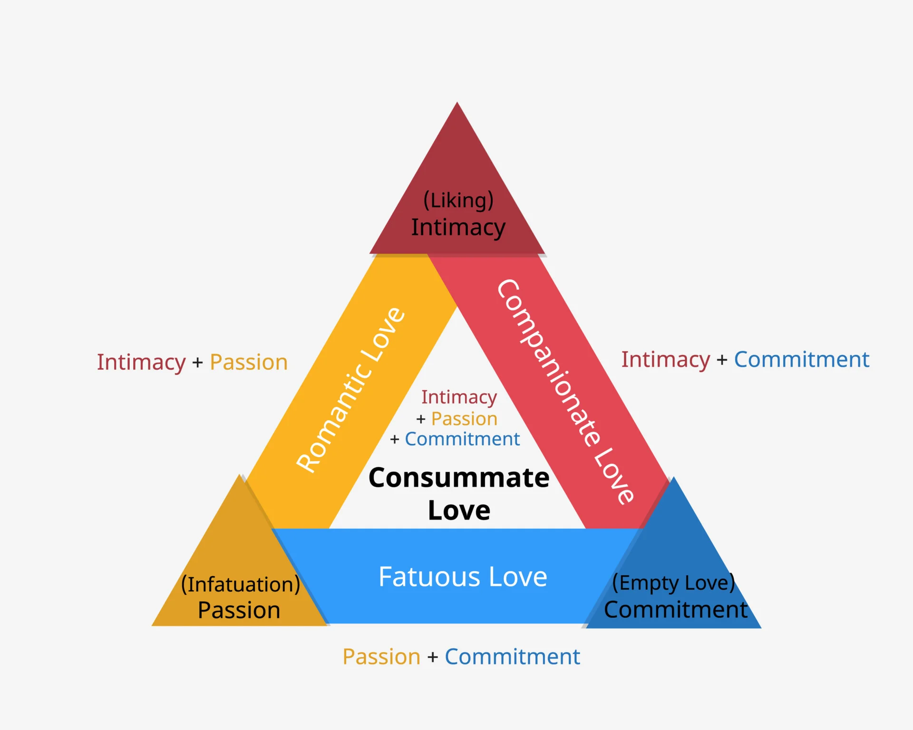
The power of the theory comes from mixing these ingredients. When only one or two are present, we get very different experiences of love:
- Liking is intimacy alone, without passion or commitment. This is the warmth we feel toward a good friend.
- Infatuation is passion alone. This is "love at first sight," an intense attraction with no real closeness or commitment behind it.
- Empty love is commitment alone. Two people stay together out of duty or habit, but the emotional connection and physical spark are gone.
- Romantic love combines passion and intimacy but is low in commitment. Partners feel close and attracted but have not decided on a shared future.
- Companionate love combines intimacy and commitment but has little passion. This is the deep, affectionate bond common in long marriages and in the closest friendships.
- Fatuous love combines passion and commitment without intimacy. Think of a whirlwind couple who marry within weeks, driven by excitement and promises but without truly knowing each other.
- Consummate love combines all three ingredients. Sternberg described this complete love as the kind most people hope for, and the kind that takes ongoing effort to maintain.
An important insight from Sternberg's work is that relationships tend to change shape over time. Early on, passion usually dominates, while intimacy and commitment are still small. As partners get to know each other, intimacy grows. If they choose to stay together, commitment grows too. In many long-term relationships, the passion that once drove everything fades, and the couple settles into companionate loveCompanionate loveA combination of high intimacy and commitment with little passion, common in long-term couples and close friendships.View in glossary →, held together by deep friendship and devotion. This is a normal, healthy path, not a sign that something has gone wrong.
Fisher's Stages of Love and the Chemistry Behind Them
While Sternberg described the psychology of love, biological anthropologist Helen Fisher and her colleagues explored its chemistry. Fisher argued that love is not only a cultural idea but a set of brain systems that evolved to help us mate and bond. She proposed that intimate love unfolds in three overlapping stages, each driven by different brain chemicals (Fisher, 2004)ReferenceFisher, H. (2004). Why we love: The nature and chemistry of romantic love. Henry Holt..
The first stage is lustLustThe first stage of Fisher's model of love, the raw drive for sexual satisfaction, fueled by the sex hormones testosterone and estrogen.View in glossary →, the raw drive for sexual satisfaction. Lust is fueled mainly by the sex hormones, testosterone and estrogen, and it pushes us to seek out partners in the first place.
The second stage is attractionAttractionThe second stage of Fisher's model of love, marked by intense, often obsessive longing (limerence) and driven by dopamine and norepinephrine.View in glossary →, the dizzying state we usually mean when we say we are "falling in love." Psychologists have a precise word for this: limerenceLimerenceAn involuntary state of intense, often obsessive longing for another person, marked by intrusive thoughts, euphoria when the feeling is returned, and emotional dependence.View in glossary →, an involuntary state of intense, often obsessive longing for another person, marked by constant intrusive thoughts about them, euphoria when they respond to us, and deep emotional dependence (Tennov, 1979)ReferenceTennov, D. (1979). Love and limerence: The experience of being in love. Stein and Day.. Limerence combines soaring joy with a nagging undercurrent of anxiety. It is exciting precisely because it is uncertain. This kind of passionate love is not unique to any one culture. A well-known survey of 166 cultures around the world found clear evidence of romantic love in the large majority of them, suggesting that falling in love is a nearly universal part of being human (Jankowiak & Fischer, 1992)ReferenceJankowiak, W. R., & Fischer, E. F. (1992). A cross-cultural perspective on romantic love. Ethnology, 31(2), 149–155..
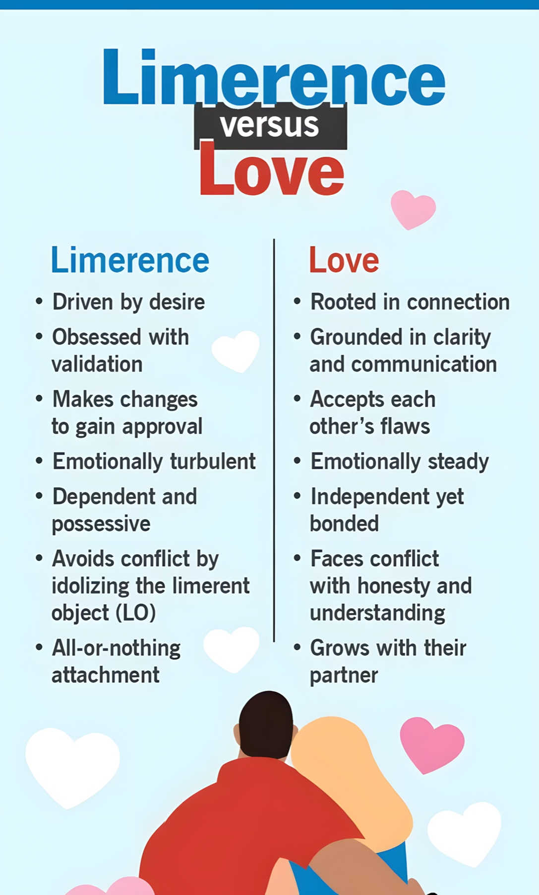
The chemistry of attraction explains why it feels so overwhelming. During this stage, levels of dopamineDopamineA neurotransmitter tied to reward and motivation that surges during the attraction stage of love, creating feelings of excitement and craving.View in glossary →, a neurotransmitter tied to reward and motivation, surge in the brain, creating the sense that the other person is thrilling, special, and worth pursuing at any cost. At the same time, norepinephrineNorepinephrineA brain chemical that surges during the attraction stage of love, producing a racing heart, extra energy, and reduced appetite and sleep.View in glossary → floods the system, producing the racing heart, the burst of energy, and the loss of appetite and sleep that lovesick people describe. Meanwhile, levels of serotoninSerotoninA brain chemical linked to calm and contentment; its levels drop during early attraction, which is associated with obsessive thinking about a partner.View in glossary →, a chemical linked to calm and contentment, actually drop. Low serotonin is associated with obsessive thinking, which helps explain why a person in early love cannot stop thinking about their partner. Rising stress hormones such as cortisol add to the intensity.
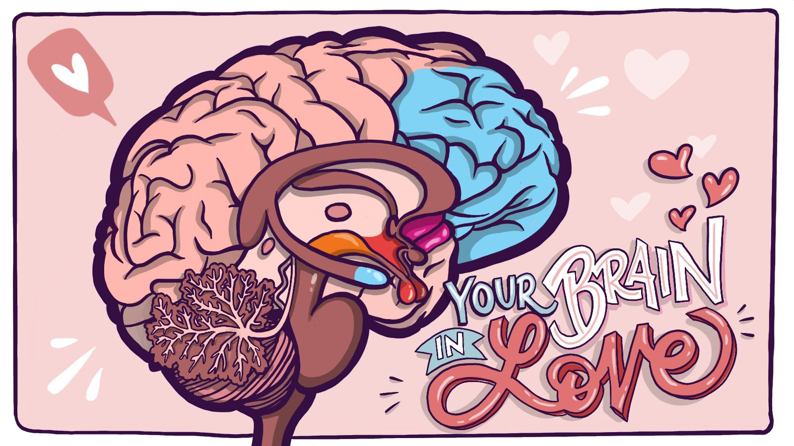
In brain-imaging studies, Fisher's team found that looking at a photo of a romantic partner activated reward-related regions of the brain, including the ventral tegmental area, which produces dopamine, and the caudate nucleus, which is tied to reward and motivation. Related work points to activity in the nucleus accumbens, a pleasure center, and the hypothalamus, which helps drive the motivation to mate. In short, early love recruits the same general brain system involved in wanting and craving (Fisher et al., 2005)ReferenceFisher, H., Aron, A., & Brown, L. L. (2005). Romantic love: An fMRI study of a neural mechanism for mate choice. The Journal of Comparative Neurology, 493(1), 58–62..
The third stage is attachment, the calm, lasting bond that can hold partners together for decades. Attachment is driven largely by two hormones. Oxytocin, released during orgasm, childbirth, and skin-to-skin contact, deepens feelings of closeness and trust. VasopressinVasopressinA hormone involved in the loyal, protective bonding behaviors of long-term relationships.View in glossary → supports the loyal, protective behaviors that mark long-term bonds. As attachment strengthens, usually somewhere between 6 months and 2 years into a relationship, the fevered chemistry of attraction begins to cool. According to Tennov, this fading is a good thing. Limerence is thrilling but also stressful. It can also lead to a hollow form of intimacy, focused on winning the other person rather than truly knowing them. In healthy long-term relationships, neither partner stays limerent. Instead, they grow closer through shared interests and genuine enjoyment of each other's company (Tennov, 1979)ReferenceTennov, D. (1979). Love and limerence: The experience of being in love. Stein and Day..
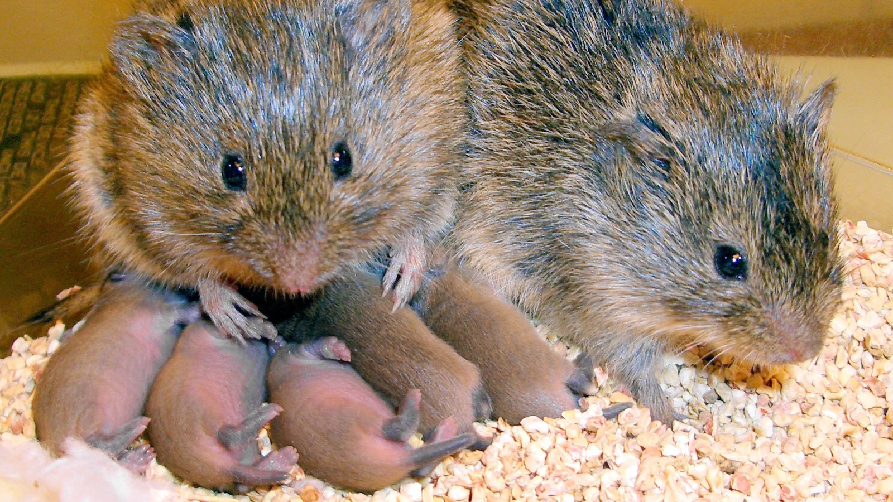
Because attraction runs on the brain's reward chemistry, early love can behave a lot like an addiction (Fisher et al., 2016)ReferenceFisher, H. E., Xu, X., Aron, A., & Brown, L. L. (2016). Intense, passionate, romantic love: A natural addiction? How the fields that investigate romance and substance abuse can inform each other. Frontiers in Psychology, 7, Article 687.. It shows the same 4 hallmarks that mark addictive behavior. There is cravingCravingIn the addiction-like pattern of early love, the constant, obsessive thoughts about the person.View in glossary →, in the form of constant, obsessive thoughts about the person. There is toleranceToleranceIn the addiction-like pattern of early love, the wish for more and more contact with the person over time.View in glossary →, a wish for more and more contact over time. There is withdrawalWithdrawalIn the addiction-like pattern of love, the way being apart from the person tends to sharpen rather than ease the longing.View in glossary →: being apart, rather than easing the longing, tends to sharpen it. And, finally, there is often relapseRelapseIn the addiction-like pattern of love, the return of intense longing for a former partner, often triggered by a small reminder, even after a breakup.View in glossary →, where even after a break-up, even a small reminder of that former partner can create an intense feeling of loss and need to reconnect. This may explain why many couples who break up get back together shortly after, a process known as churningChurningA pattern in which a couple repeatedly breaks up and gets back together.View in glossary → (Halpern-Meekin et al., 2013)ReferenceHalpern-Meekin, S., Manning, W. D., Giordano, P. C., & Longmore, M. A. (2013). Relationship churning in emerging adulthood: On/off relationships and sex with an ex. Journal of Adolescent Research, 28(2), 166–188..
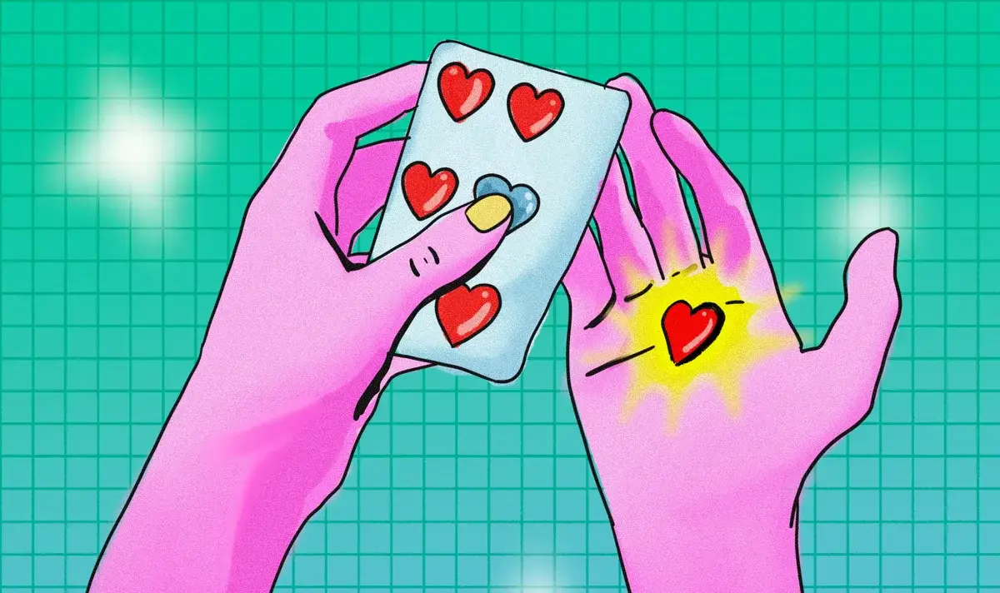
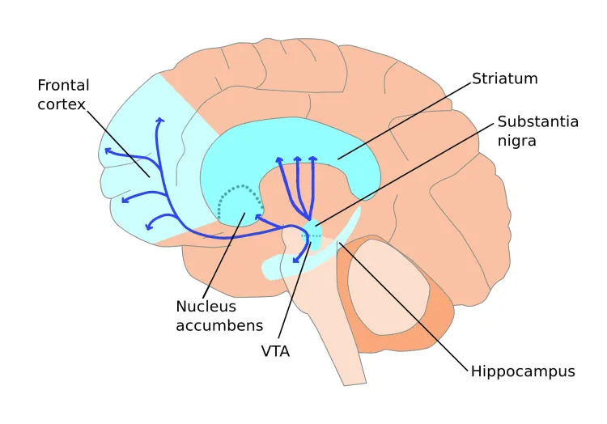
Notice how neatly Fisher's stages line up with Sternberg's triangle. Lust maps onto passion, attraction onto the early intensity of intimacy, and attachment onto commitment. Two very different research traditions, one psychological and one biological, arrived at a similar picture of how love grows.
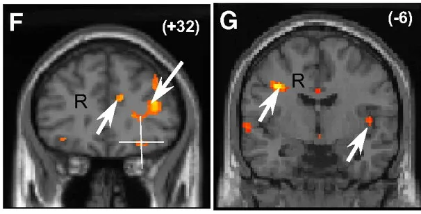
Keeping Love Alive: Building Intimacy and Passion
Passion naturally cools over time, and intimacy is built slowly over the course of many interactions. This means that lasting love clearly takes effort. Research points to concrete ways couples can strengthen the kind of intimacy that sets love up to last a lifetime.
Building intimacy starts with self-disclosureSelf-disclosureThe act of gradually sharing one's inner thoughts and feelings with another person; a key builder of intimacy when it is mutual and well received.View in glossary →, the act of gradually sharing our inner thoughts and feelings with a partner. Intimacy grows when disclosure is mutual and increasingly deepened. Intimacy can be especially powerful when we share something we're not proud of, such as our greatest fears or self-perceived weaknesses. When a partner responds with care rather than judgment, this helps build a shared bond of trust and appreciation. Showing empathy matters too. Celebrating a partner's good news is just as important as comforting them through disappointment. True emotional bonding shares in the joys of life, as well as the sorrows.
While many couples show waning passion over years of being together, there are ways to keep the spark alive. Novelty is especially helpful in recreating the excitement of early love, whether through new experiences, new settings, or new expressions of intimacy. Couples can try having sex in different areas of the house, while vacationing away from home, or even in the outdoors (hopefully away from prying eyes). It's also important to make deliberate time for sex and romance. "Scheduling sex" may sound unromantic, but when a couple knows they'll be having sex at a certain day and time, this can build anticipation and excitement. Open communication about desires and preferences, along with regular affection outside the bedroom such as holding hands and kissing, also keeps romance alive.
After eight years together, Jordan and Sam feel deeply committed and emotionally close, but the sexual excitement of their early years has faded. According to Sternberg's theory, they are most likely experiencing:
A friend describes their new crush: "I can't eat, I can't sleep, and I think about them every second." Which stage of Fisher's model, and which chemistry, best matches this description?
12.3 Love Maps and Attachment Styles
Why do we fall for one person and not another? And why do some people keep repeating the same relationship patterns, for better or worse? Two related ideas help answer these questions: love maps and attachment styles.
Love Maps
According to researcher John Money, each of us carries a love mapLove mapA mental template, built from temperament and early learning, of the features a person finds ideal in a partner and a relationship.View in glossary →, a kind of mental template of the features we find attractive in a romantic partner and what a relationship should look like (Money, 1997)ReferenceMoney, J. (1997). Principles of developmental sexology. Continuum.. A love map is like a private description of our romantic ideal, built partly from our temperament and partly from what we learned about love growing up. For one person, the map might include kindness, laughter, and a strong devotion to family. For another, it might include drama and intense makeup sex after fights. Dr. Money compared learning to love with learning a language: We absorb the rules early, often without noticing, and they shape us for the rest of our lives.
What actually makes two people fall in love once they meet? Social psychologist Arthur Aron argued that a key ingredient is mutual vulnerability, built through self-disclosure that is sustained, escalating, and reciprocal. In a well-known study, Aron and his colleagues designed a set of 36 increasingly personal questions that two strangers take turns answering, moving from light topics to deep ones such as their most treasured memories and greatest fears (Aron et al., 1997)ReferenceAron, A., Melinat, E., Aron, E. N., Vallone, R. D., & Bator, R. J. (1997). The experimental generation of interpersonal closeness: A procedure and some preliminary findings. Personality and Social Psychology Bulletin, 23(4), 363–377.. The structured openness the questions create can generate a striking sense of closeness in less than an hour. The study does not prove that anyone can be made to fall in love on command, but it shows how central shared vulnerability is to building intimacy.
Attachment Styles
Adult relationships are shaped, in part, by how we bonded with caregivers as children. These patterns are known as our attachment styleAttachment styleThe general pattern of how a person connects with those closest to them, shaped by early caregiving and carried into adult relationships.View in glossary →, the general pattern of how we connect with the people closest to us. Attachment theory began with the study of infants. A baby whose caregiver is warm and reliable tends to learn that others can be trusted and that they themselves are worth caring for. A baby whose care is cold, inconsistent, or frightening may learn the opposite. Research suggests that these early lessons crystallize into a working model of relationships that we carry into adulthood.
That working model runs along two basic questions. First: Do I see myself as worthy of love and support? Second: Do I see other people as trustworthy and available? Each of these questions can be answered positively or negatively, seeing oneself and others as generally good or generally bad. Different combinations produce 4 different attachment styles (Bartholomew & Horowitz, 1991)ReferenceBartholomew, K., & Horowitz, L. M. (1991). Attachment styles among young adults: A test of a four-category model. Journal of Personality and Social Psychology, 61(2), 226–244..
Researchers often describe these same two questions as two continuous dimensions rather than simple yes-or-no answers (Brennan, Clark, & Shaver, 1998)ReferenceBrennan, K. A., Clark, C. L., & Shaver, P. R. (1998). Self-report measurement of adult attachment: An integrative overview. In J. A. Simpson & W. S. Rholes (Eds.), Attachment theory and close relationships (pp. 46–76). Guilford Press.. The first dimension, attachment anxiety, captures how much a person worries about their own worth and fears abandonment, which is the flip side of asking whether one is worthy of love. The second, attachment avoidance, captures how uncomfortable a person is with closeness and dependence, which follows from how much one trusts others to be available. Thinking in dimensions matters because most people do not fall neatly into a single box. A person can be a little anxious and very avoidant, or high on both, and someone can slide along either dimension over the course of a life. The four styles below are best understood as regions on this two-dimensional map, convenient names for common combinations rather than four separate kinds of people.
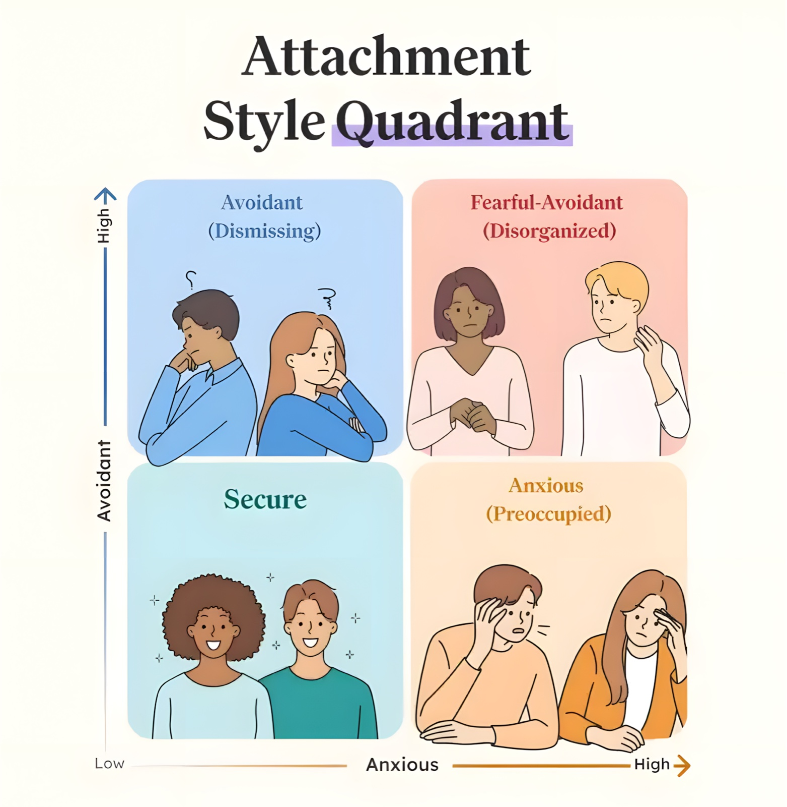
Secure attachmentSecure attachmentAn adult attachment style marked by a positive view of both self and others, comfort with closeness, and the ability to give and receive support.View in glossary → is experienced by people who hold positive views of themselves and others. Secure people find it relatively easy to get close, to trust, and to depend on a partner without losing themselves. They can ask for support when they need it and offer it when a partner is hurting, and they tend to build the kind of trusting, intimate relationships that hold up under stress. In a large recent general-population survey, roughly 65% of adults showed this attachment style, making it the most common (Simonsen et al., 2026)ReferenceSimonsen, S., Austin, S., Gondan, M., Hestbaek, E., Juul, S., & Moeller, S. B. (2026). Self-reported attachment styles in the Danish general population: Gender and age-related differences and associations with mental health. Scandinavian Journal of Psychology, 67(3), 725–735.. Studies show that secure attachment is associated with lower rates of affairs (Ghiasi et al., 2024)ReferenceGhiasi, N., Rasoal, D., Haseli, A., & Feli, R. (2024). The interplay of attachment styles and marital infidelity: A systematic review and meta-analysis. Heliyon, 10(1), Article e23261., domestic violence (Spencer, Keilholtz, & Stith, 2021)ReferenceSpencer, C. M., Keilholtz, B. M., & Stith, S. M. (2021). The association between attachment styles and physical intimate partner violence perpetration and victimization: A meta-analysis. Family Process, 60(1), 270–284., and divorce (McNelis & Segrin, 2019)ReferenceMcNelis, M., & Segrin, C. (2019). Insecure attachment predicts history of divorce, marriage, and current relationship status. Journal of Divorce & Remarriage, 60(5), 404–417..
Preoccupied attachmentPreoccupied attachmentAn anxious adult attachment style marked by a negative view of the self, a positive view of others, a craving for reassurance, and fear of abandonment.View in glossary →, sometimes called anxious attachmentAnxious attachmentAnother name for preoccupied attachment.View in glossary →, sits high on anxiety but low on avoidance. It reflects a negative view of the self (i.e., low self-esteem), combined with a positive view of others as desirable and worth pursuing. Preoccupied people crave closeness and constant reassurance, frequently asking their partner to reaffirm their love through praise, gifts, and sex. They are hypervigilant for signs of waning interest in their partner, driven by a fear of being abandoned. They desperately desire intimacy but secretly doubt they deserve it. This can cause preoccupied lovers to become clingy and easily jealous. Their bids for reassurance often backfire, as they can come off as whiny, sulking or generally annoying. This can end up pushing a partner away, which further activates fears of abandonment (Don et al., 2019)ReferenceDon, B. P., Girme, Y. U., & Hammond, M. D. (2019). Low self-esteem predicts indirect support seeking and its relationship consequences in intimate relationships. Personality and Social Psychology Bulletin, 45(7), 1028–1041.. Preoccupied attachment is the least common style, seen in around 7% of adults (Simonsen et al., 2026)ReferenceSimonsen, S., Austin, S., Gondan, M., Hestbaek, E., Juul, S., & Moeller, S. B. (2026). Self-reported attachment styles in the Danish general population: Gender and age-related differences and associations with mental health. Scandinavian Journal of Psychology, 67(3), 725–735..
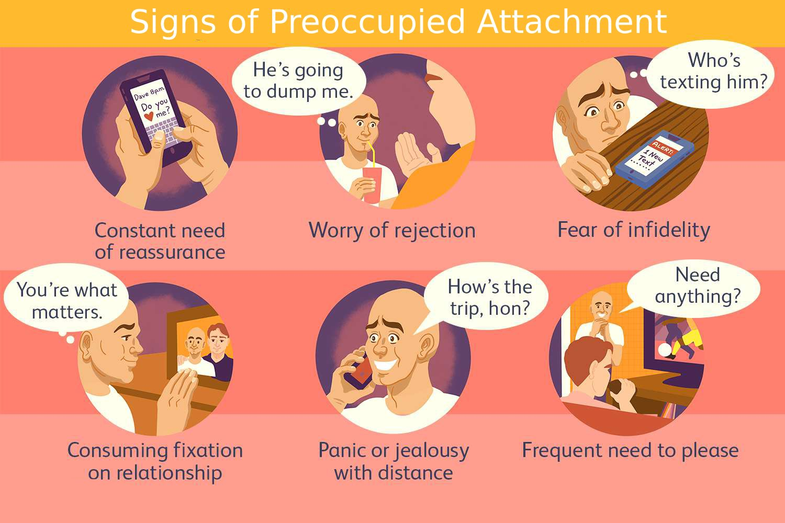
Dismissing attachmentDismissing attachmentAn avoidant adult attachment style marked by a positive view of the self, a negative view of others, emotional distance, and low self-disclosure.View in glossary →, sometimes called avoidant attachmentAvoidant attachmentAnother name for dismissing attachment.View in glossary →, reverses that pattern, showing low anxiety but high avoidance. It reflects a positive view of the self, but a negative view of others as unreliable or uncaring. Dismissing people keep their distance, disclose little about their inner lives, and tend to see needing other people as a weakness. They prize self-reliance and independence, even at the cost of loneliness and self-isolation. Dismissing attachment is the most common insecure pattern, estimated at around 14% of adults (Simonsen et al., 2026)ReferenceSimonsen, S., Austin, S., Gondan, M., Hestbaek, E., Juul, S., & Moeller, S. B. (2026). Self-reported attachment styles in the Danish general population: Gender and age-related differences and associations with mental health. Scandinavian Journal of Psychology, 67(3), 725–735..
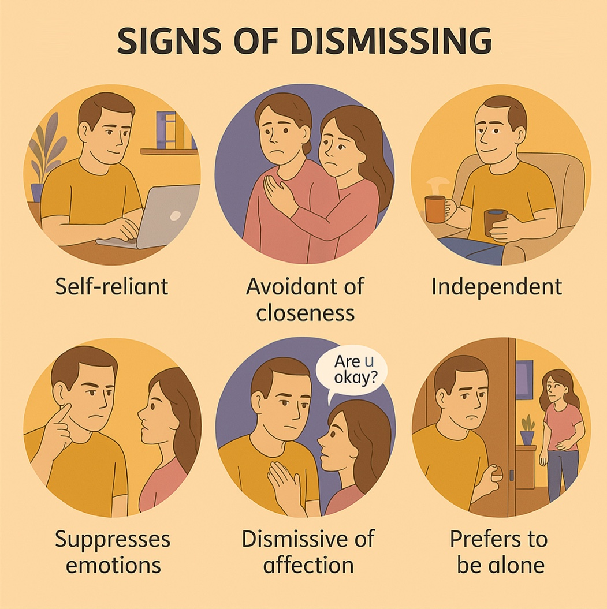
Disorganized attachmentDisorganized attachment (fearful-avoidant)An adult attachment style marked by a negative view of both self and others; the person wants closeness but fears it and swings between reaching out and pulling away.View in glossary →, sometimes called fearful-avoidant attachment, sits high on both dimensions at once—reflecting negative views of oneself and others. This pulls the person in two directions simultaneously. Disorganized people genuinely want closeness but are also frightened of it, so they can swing wildly between reaching for a partner and pushing them away. This push-and-pull makes their relationships feel unstable, even volatile. It's the attachment style most commonly related with toxic and manipulative relationship patterns, such as love bombing—showering a partner with extreme affection to hook them or to smooth over a fight—and gaslighting—convincing someone that their partner's erratic or hurtful behavior is somehow their fault (Mikulincer & Shaver, 2016)ReferenceMikulincer, M., & Shaver, P. R. (2016). Attachment in adulthood: Structure, dynamics, and change (2nd ed.). Guilford Press.. Disorganized attachment is estimated at around 13% of adults (Simonsen et al., 2026)ReferenceSimonsen, S., Austin, S., Gondan, M., Hestbaek, E., Juul, S., & Moeller, S. B. (2026). Self-reported attachment styles in the Danish general population: Gender and age-related differences and associations with mental health. Scandinavian Journal of Psychology, 67(3), 725–735..
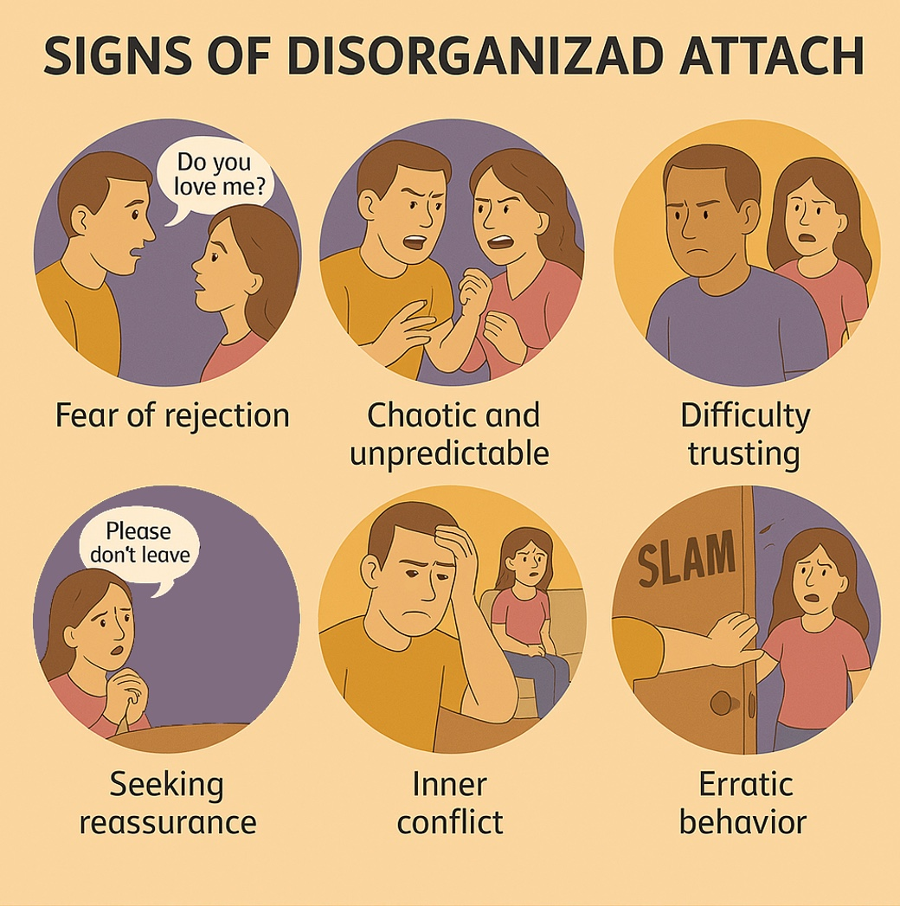
Underneath these 4 styles are 2 basic strategies for managing relational distress (Mikulincer, Shaver, & Pereg, 2003)ReferenceMikulincer, M., Shaver, P. R., & Pereg, D. (2003). Attachment theory and affect regulation: The dynamics, development, and cognitive consequences of attachment-related strategies. Motivation and Emotion, 27(2), 77–102.. People high in anxiety tend to rely on hyperactivating strategies. They turn the volume up on their distress, stay hypervigilant to any hint of rejection, and escalate their bids for closeness in an effort to force a response from the partner. This may look like grand romantic gestures, or larger-than-life dramatic moments (e.g., throwing a lover's clothes out on the lawn). People high in avoidance do the opposite, relying on deactivating strategies. They turn the volume down, suppress or deny their need for others, and try to handle threats by pulling inward and insisting they are fine. Don't mistake deactivating for calm emotions, though. Under the surface, people who show deactivating behaviors (e.g., walking away during a fight) tend to show elevated heart rates and other signs of stress that they're working hard not to show (Mikulincer & Shaver, 2016)ReferenceMikulincer, M., & Shaver, P. R. (2016). Attachment in adulthood: Structure, dynamics, and change (2nd ed.). Guilford Press..
Attachment matters because it predicts so much of what happens once two people are actually together. Compared with insecure adults, secure adults tend to report greater relationship satisfaction, handle conflict with less hostility and defensiveness, and provide more emotional support when one partner is struggling (Mikulincer & Shaver, 2016)ReferenceMikulincer, M., & Shaver, P. R. (2016). Attachment in adulthood: Structure, dynamics, and change (2nd ed.). Guilford Press.. Attachment anxiety is associated with more jealousy, more intense distress after a breakup, and a tendency to read rejection into ambiguous situations. Meanwhile, attachment avoidance is associated with less self-disclosure, more emotional distance, and greater difficulty leaning on one's partner during hard times. These patterns reach into the bedroom as well. Attachment orientations are linked to how people experience and communicate about sex, with anxious individuals sometimes using sex to seek reassurance and avoidant individuals tending to keep sex separate from emotional intimacy (Birnbaum, 2007)ReferenceBirnbaum, G. E. (2007). Attachment orientations, sexual functioning, and relationship satisfaction in a community sample of women. Journal of Social and Personal Relationships, 24(1), 21–35.. None of this is destiny, but it does mean that attachment is far more than a personality label. It shapes the very foundations of our relationships.
While attachment styles are often consistent over time, they can be changed through effort and self-examination (Fraley, 2002)ReferenceFraley, R. C. (2002). Attachment stability from infancy to adulthood: Meta-analysis and dynamic modeling of developmental mechanisms. Personality and Social Psychology Review, 6(2), 123–151.. Our relationship partners can also have a big influence on us. A steady, responsive relationship can gradually soften insecurities and avoidance. Therapy can do similar work. Researchers use the term "earned security" to describe people who grew up with difficult early relationships yet developed a secure attachment style later in life (Roisman et al., 2002)ReferenceRoisman, G. I., Padrón, E., Sroufe, L. A., & Egeland, B. (2002). Earned-secure attachment status in retrospect and prospect. Child Development, 73(4), 1204–1219.. Developing a more secure attachment to others in our lives is achievable at any age or stage in a relationship.
Alex constantly worries that their partner will leave and often sulks or gives the silent treatment to get reassurance, which tends to frustrate the partner and create distance. Which attachment style does this pattern most likely reflect?
Two new acquaintances take turns answering a series of increasingly personal questions and quickly feel unusually close. Which principle best explains this result?
12.4 Relationship Conflict
Fighting is a normal part of every relationship. Conflict itself does not doom a relationship. What matters most is how partners fight and how they make up afterward. Some of the most influential research on this question comes from psychologist John Gottman, who recorded thousands of hours of couples having real fights. What his research has uncovered paints a picture of how a couple can fight in healthy ways that actually sustain their relationship.
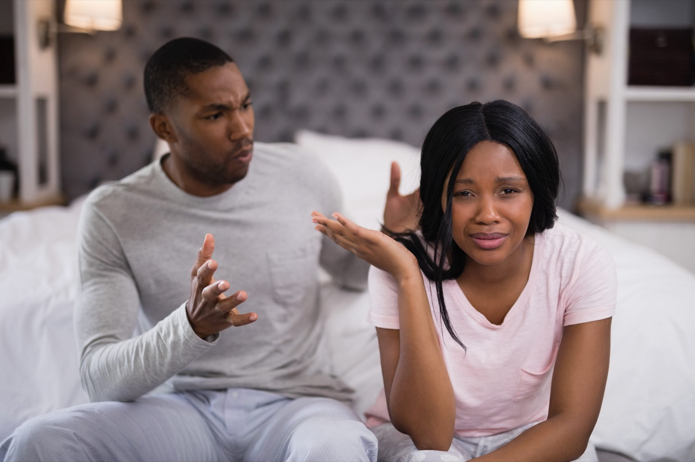
Inside the "Love Lab"
Gottman set up an observational laboratory, nicknamed the "Love Lab," where couples were video recorded and physiologically monitored while they worked through a common argument. By carefully coding how partners spoke to each other during these interactions, Gottman's team could predict with more than 90% accuracy which couples would still be together years later (Gottman & Levenson, 1992)ReferenceGottman, J. M., & Levenson, R. W. (1992). Marital processes predictive of later dissolution: Behavior, physiology, and health. Journal of Personality and Social Psychology, 63(2), 221–233.. In some studies, only the first few minutes of a conflict conversation were needed to accurately predict divorce within the next 3 years (Carrère & Gottman, 1999)ReferenceCarrère, S., & Gottman, J. M. (1999). Predicting divorce among newlyweds from the first three minutes of a marital conflict discussion. Family Process, 38(3), 293–301.. The predictive power came not from whether couples argued, but from the presence of a few specific, corrosive behaviors.
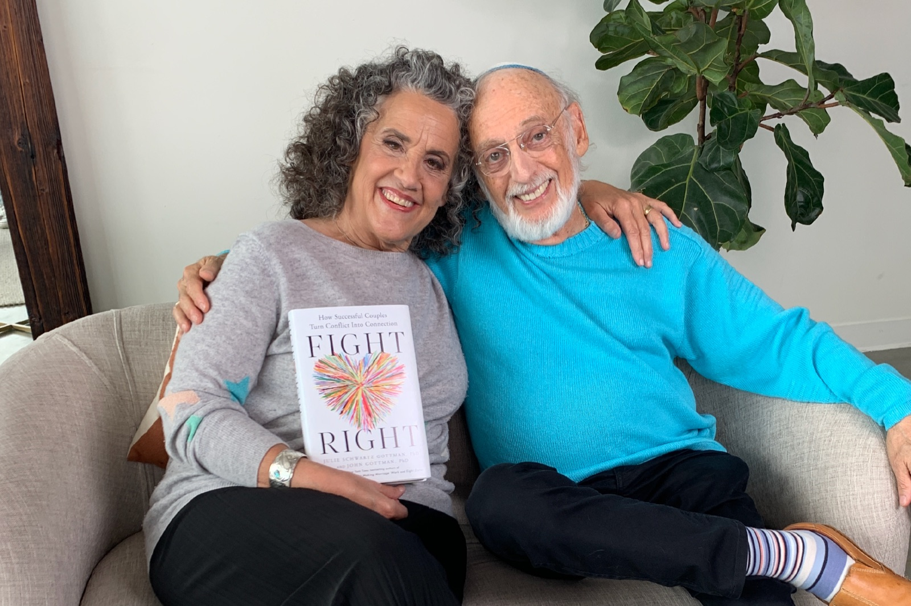
The Four Horsemen
Gottman named the four most damaging patterns the Four HorsemenFour HorsemenGottman's term for the four most damaging conflict behaviors: criticism, defensiveness, stonewalling, and contempt.View in glossary →, a nod to the biblical harbingers of disaster. When these behaviors dominate a couple's conflicts, the relationship is in serious trouble.
- Criticism attacks the partner's character rather than addressing a specific behavior. "You forgot the trash again" is a complaint. "You're so lazy and selfish" is criticism. It shows up in two main forms. The first is open accusation, blaming a partner and expecting them to accept fault. The second is subtler: an unwanted "analysis" of everything wrong with the partner, offered as if the partner should be grateful for the insight. Both forms send the same message: the problem is not what you did, it is who you are.
- Defensiveness turns a partner's complaint back into an accusation, dodging responsibility instead of hearing the concern. It usually escalates rather than resolves the conflict.
- Stonewalling is shutting down and withdrawing from the conversation entirely. It often happens when a person becomes physiologically overwhelmed, a state called floodingFloodingA state of physiological overwhelm during conflict, marked by a racing heart and stress response, that makes calm discussion nearly impossible and can lead to stonewalling.View in glossary →, in which the heart races and the body floods with stress hormones, making calm discussion nearly impossible.
- Contempt is the most destructive of the four. It means treating a partner with disgust or superiority, through mockery, name-calling, eye-rolling, or "correcting" what the partner supposedly really thinks or feels. Contempt attacks a partner's sense of worth, and it is the single strongest predictor of a relationship's breakdown (Gottman & Levenson, 1992)ReferenceGottman, J. M., & Levenson, R. W. (1992). Marital processes predictive of later dissolution: Behavior, physiology, and health. Journal of Personality and Social Psychology, 63(2), 221–233..
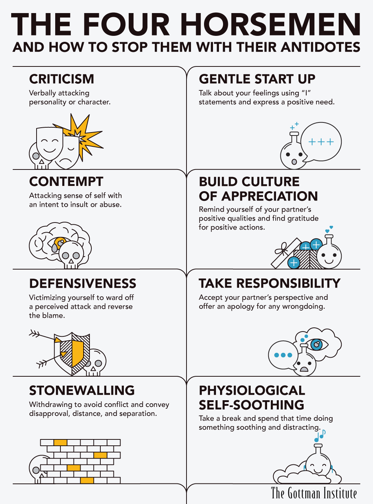
Repair and the Skills of Lasting Couples
If conflict is universal, what separates couples who last from those who split? Gottman's research shows that a couple's ability to repair after a fight is a major factor. A repair attempt is any word or gesture that keeps a disagreement from spiraling. This can be self-effacing humor, a softened tone, a hand on a shoulder, an admission that "I got carried away." Couples who stay together know how to deescalate conflict when it gets too heated, as well as how to keep a light tone even when in conflict.
Gottman uses the term "relationship masters" for couples who display cooperative and compassionate behavior during conflict. This can include:
- They keep the focus on the specific problem behavior instead of putting the partner on trial.
- They say clearly and concretely what would make things better, rather than leaving the partner to guess.
- They can genuinely accept an apology and let go of the hurt, instead of storing it up to use as ammunition later. This last skill, called releasing resentmentReleasing resentmentThe ability to accept an apology and let go of a past hurt rather than storing it up as ammunition; one of the skills of lasting couples.View in glossary →, is one of the hardest but also one of the best predictors of a lasting relationship.
Because conflict is easier to handle with a plan, therapists often suggest that couples agree on a few ground rules for "fighting fair." Ideally, such rules are set early in the relationship, before a major fight even occurs. A good set of rules may be:
- No sarcasm or name-calling
- Focus on solutions rather than on who is to blame
- Ask questions and listen fully instead of assuming what a partner thinks or feels
- If things get too heated, take a break and return when both people have cooled down
That last rule directly counters "flooding," which is when the body becomes flooded with stress hormones, making it much more difficult to have a constructive conversation. Giving the body time to settle so the couple can talk, rather than lash out or shut down, helps couples have good fights that actually help solve problems.
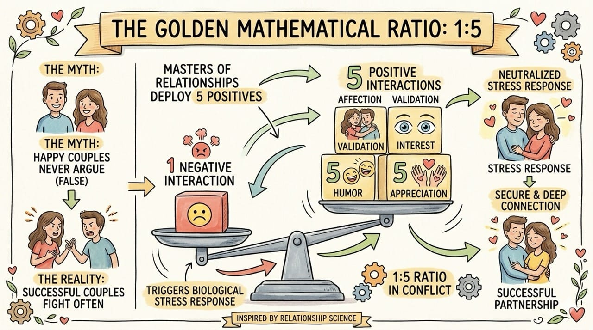
During an argument, Riley rolls their eyes and says, "Wow, I didn't realize I was dating a child." According to Gottman's research, which of the Four Horsemen is this, and why is it especially concerning?
Two partners are in a heated argument. One notices their heart pounding and feels unable to think clearly, so they say, "I need twenty minutes, then let's finish this." Based on the chapter, this is best understood as:
12.5 Will It Last? Predicting Relationship Stability
Long-term relationships can offer companionship, romance, sexual fulfillment, and a shared sense of meaning. Yet many couples watch those rewards erode until the relationship ends. Relationship satisfaction is widely seen as the factor that most closely predicts whether a relationship will break down (Fincham et al., 2018)ReferenceFincham, F. D., Rogge, R., & Beach, S. R. H. (2018). Relationship satisfaction. In A. L. Vangelisti & D. Perlman (Eds.), The Cambridge handbook of personal relationships (pp. 422–436). Cambridge University Press.. So, what determines satisfaction, and what keeps couples together?
Predictive Models
Social exchange theorySocial exchange theoryA theory that treats relationship commitment as an economic weighing of rewards, costs, comparison level, and the quality of alternatives.View in glossary → (SET) analyzes relationships in the language of economics, treating our commitment as something we weigh, even if we do not realize we are doing it (Cook & Rice, 2003)ReferenceCook, K. S., & Rice, E. (2003). Social exchange theory. In J. Delamater (Ed.), Handbook of social psychology (pp. 53–76). Springer.. According to the theory, our sense of commitment depends on four judgments.
- Rewards are what we get out of the relationship: a partner's good qualities and any benefits the relationship brings.
- Costs are the downsides: annoying habits, conflicts, and sacrifices the relationship requires. Every relationship carries some costs.
- Comparison level is the quality of relationship we believe we deserve, based mostly on our past experience. A high comparison level means we expect a lot; a low one means our hopes are more modest.
- Comparison level for alternatives is how good we believe our other options are. If we think a better partner is easily within reach, we are more likely to leave. If we believe no better option exists, we are more likely to stay.
A large body of research supports the theory: people's judgments about these four variables reliably predict how committed they are and whether they stay or go, and the pattern holds across many cultures (Baumeister & Vohs, 2004)ReferenceBaumeister, R. F., & Vohs, K. D. (2004). Sexual economics: Sex as female resource for social exchange in heterosexual interactions. Personality and Social Psychology Review, 8(4), 339–363.. In a rough sense, we tend to "buy" the best relationship available to us given our options.
An example of SET can be found in the everyday reasoning we do whenever a relationship starts to feel like more work than it's worth. Imagine Maya, who has been dating Jordan for two years. Jordan is funny and dependable and shares her love of hiking, so the relationship still delivers real rewards. Lately, though, the costs have crept up, because Jordan works long hours and the two of them argue about money more than they once did. Whether Maya stays depends on more than this simple ledger of rewards and costs. It also depends on what she believes she deserves and on how good she thinks her other options are. If Maya grew up expecting warm, easygoing partnerships, that high comparison levelComparison levelIn social exchange theory, the quality of relationship a person believes they deserve, based largely on past experience.View in glossary → may leave her feeling especially disappointed. If she suspects that a more attentive partner is within easy reach, her comparison level for alternativesComparison level for alternativesIn social exchange theory, a person's sense of how good their other relationship options are; believing better options exist makes leaving more likely.View in glossary → is high, and she may decide to move on. SET offers a way to understand the hidden calculus behind why couples split or stay together.
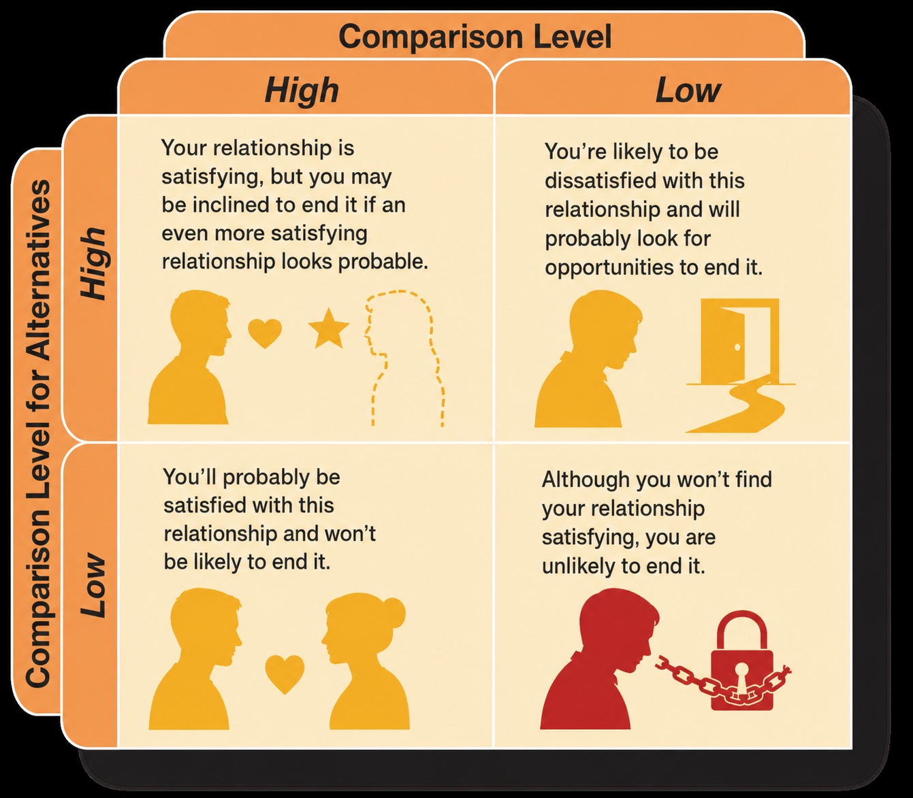
Social exchange theory has a puzzle, though. Why do people sometimes stay in unhappy relationships even when good alternatives exist? Caryl Rusbult's investment modelInvestment modelRusbult's extension of social exchange theory, adding the resources already put into a relationship as a factor that keeps people committed, even in unsatisfying relationships.View in glossary → extends SET by adding a third factor: investment (Rusbult et al., 2011)ReferenceRusbult, C. E., Agnew, C. R., & Arriaga, X. B. (2011). The investment model of commitment processes. In P. A. M. Van Lange, A. W. Kruglanski, & E. T. Higgins (Eds.), Handbook of theories of social psychology (Vol. 2, pp. 218–231). Sage.. Investments are the resources we have already put into a relationship, which we would lose if it ended. Some are tangible, like shared property or finances. Others are intangible, like the years of time and effort we have poured in, or the well-being of children. In Rusbult's research, satisfaction, quality of alternatives, and investment together predicted whether people stayed or left with high accuracy (Rusbult et al., 2011)ReferenceRusbult, C. E., Agnew, C. R., & Arriaga, X. B. (2011). The investment model of commitment processes. In P. A. M. Van Lange, A. W. Kruglanski, & E. T. Higgins (Eds.), Handbook of theories of social psychology (Vol. 2, pp. 218–231). Sage.. The model also sheds light on why some people remain in harmful relationships: they may feel they have too much invested to walk away, or believe they have no better options to turn to (Rusbult & Martz, 1995)ReferenceRusbult, C. E., & Martz, J. M. (1995). Remaining in an abusive relationship: An investment model analysis of nonvoluntary dependence. Personality and Social Psychology Bulletin, 21(6), 558–571..
A simpler cousin of these ideas is equity theoryEquity theoryThe idea that people are most satisfied when they feel the give-and-take of a relationship is fair and balanced.View in glossary →, which holds that we are most satisfied when we feel the give-and-take of a relationship is fair. Notably, equity theory does not predict that we simply want to get as much as possible out of a relationship. Instead, we are happiest when both partners feel they are contributing and benefiting in balance. If you are making sacrifices and putting in real effort, equity theory says you will be content as long as you sense your partner is doing the same. Feeling that we give far more than we receive breeds resentment, which often erodes relationships over time (Sprecher, 2001)ReferenceSprecher, S. (2001). Equity and social exchange in dating couples: Associations with satisfaction, commitment, and stability. Journal of Marriage and Family, 63(3), 599–613..
What about if someone is "over benefitting" in a relationship—getting more than they're putting in? In such cases, research shows that they're likely to view the relationship positively. This contradicts the stronger claims of equity theory, which posit that any inequity in a relationship should be dissatisfying. It turns out that we don't care as much about inequity if we're the ones benefiting from it (Sprecher, 2001)ReferenceSprecher, S. (2001). Equity and social exchange in dating couples: Associations with satisfaction, commitment, and stability. Journal of Marriage and Family, 63(3), 599–613..
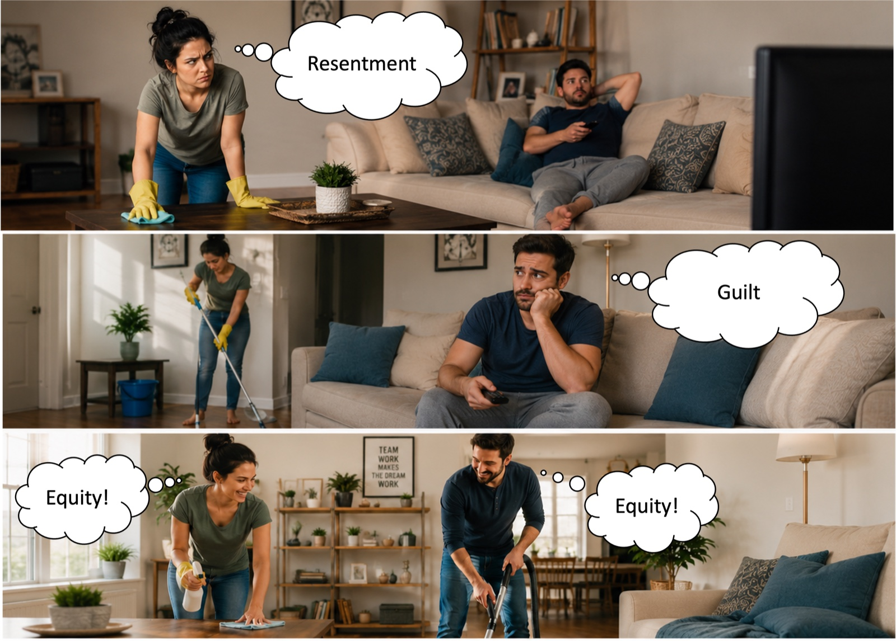
Largest Predictors
In 2020, a team led by Samantha Joel and Paul Eastwick pooled data from 43 separate studies, involving more than 11,000 couples, and used machine learning to find the strongest predictors of relationship quality (Joel et al., 2020)ReferenceJoel, S., Eastwick, P. W., Allison, C. J., Arriaga, X. B., Baker, Z. G., Bar-Kalifa, E., … Wolf, S. (2020). Machine learning uncovers the most robust self-report predictors of relationship quality across 43 longitudinal couples studies. Proceedings of the National Academy of Sciences, 117(32), 19061–19071.. One of the most surprising findings is that many factors once believed to be major determinants of relationship success showed little predictive value. For example, many "partner features," such as partners' physical attractiveness, personality traits and the degree of similarity between them, barely registered as predictors of satisfaction. The strongest predictors were "relationship features," namely:
- Desiring deep commitment in a relationship
- Regularly showing their partner signs of appreciation
- Communication skills, such as active listening and problem solving
Another important factor was sexual compatibility, with couples who rated their sex lives as mutually satisfying showing greater relationship satisfaction across the board.
The fact that a couple's mutual desire for commitment was such a strong predictor of relationship satisfaction is particularly illuminating. It suggests that commitment is not simply a result of a good relationship; it may be the underlying cause of one. Couples who decide to be devoted tend to invest more effort, care, and compromise, which in turn produces the high levels of satisfaction they were hoping for. In other words, lasting love often begins with a choice to commit, rather than waiting for a perfect relationship to commit to.
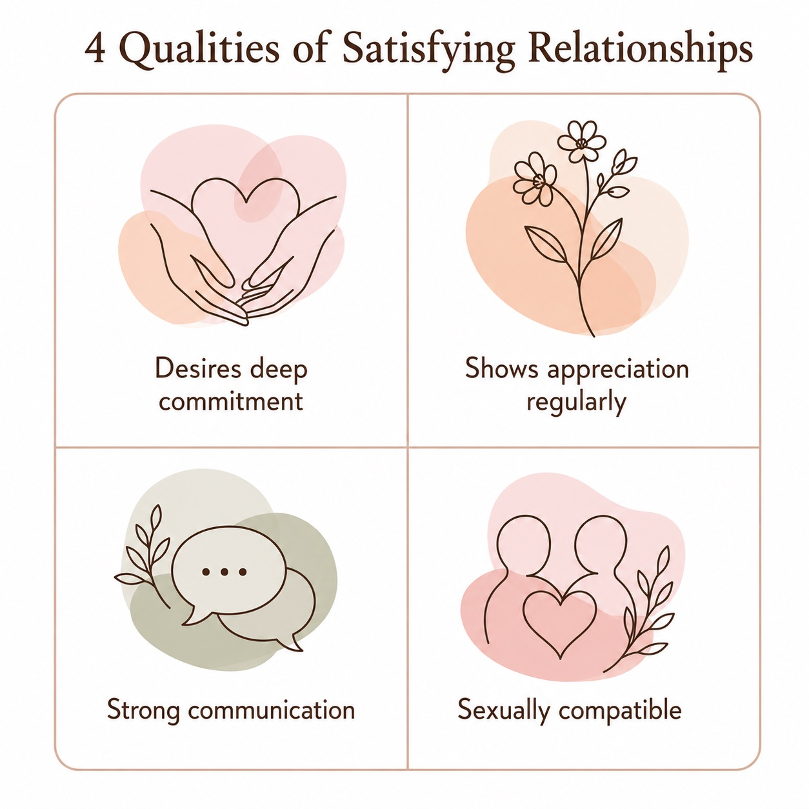
This pooled evidence fits with the decades-long Harvard Study of Adult Development, which found that warm, satisfying close relationships are among the strongest predictors of long-term health and well-being, more powerful even than many physical measures (Waldinger & Schulz, 2023)ReferenceWaldinger, R. J., & Schulz, M. S. (2023). The good life: Lessons from the world's longest scientific study of happiness. Simon & Schuster.. There is even evidence that partnership itself is linked to a longer life: one large study found that married or cohabiting people live roughly 2.5 to 7.5 years longer than people living alone, with the protective effect stronger for men (Balter et al., 2023)ReferenceBalter, A. G., Bjerre, D. S., & Kallestrup-Lamb, M. (2023). The effect of marital status on life expectancy: Is cohabitation as protective as marriage? Journal of Demographic Economics, 89(3), 373–394..
Taken together, the science delivers a hopeful message. The traits we are born with and the looks we happen to have matter far less than the everyday choices we make: to commit, to show appreciation, to communicate, to repair after conflict, and to keep building intimacy over time. Lasting love, the evidence says, is less about finding the right person and more about becoming a good partner.
Taylor is deeply unhappy in their relationship but stays, explaining, "We've been together twelve years, we own a home together, and I'd lose all of that if I left." Which theory best explains Taylor's decision to stay?
Based on the Joel et al. (2020) machine-learning study, which of the following would best predict a satisfying relationship?
Study Guide
After reading this chapter, you should be able to answer each of the questions below. Use your own words where possible, and support your answers with examples from the chapter.
12.1 Why Sex Matters: The Purpose of Sexual Relationships
- Explain the difference between the evolutionary purpose of sex and its social or psychological purposes. Why is reproduction an incomplete explanation for human sexual relationships?
- What is pair bonding, and what evolutionary explanation does the chapter give for why sex and lasting bonds tend to go together in humans?
- How might regular, satisfying sex be connected to better health and a longer life? Describe the role of oxytocin and social ties in at least one proposed mechanism.
12.2 The Science of Love
- Name and define the three components of Sternberg's Triangular Theory of Love. Then explain how combining them produces companionate love versus fatuous love.
- Explain how early romantic love can resemble an addiction. Identify the hallmarks the chapter describes (craving, tolerance, withdrawal, relapse) and explain what "churning" refers to.
- Describe Fisher's three stages of intimate love and the main brain chemicals involved in each stage.
- What is limerence, and why does it fade? According to Tennov, why is its fading a healthy development rather than a loss?
- A couple complains that their long relationship has lost its spark. Using the chapter's guidance on building intimacy and passion, suggest specific steps they might take.
12.3 Love Maps and Attachment Styles
- What is a love map, and where does Money believe it comes from? Give an example of how two people's love maps might differ.
- Explain how Aron's 36-question study illustrates the role of self-disclosure in building intimacy.
- Compare the four adult attachment styles in terms of how each views the self and others. Give a brief behavioral example of each.
- Explain how a preoccupied person's attempts to get reassurance can backfire and produce the very outcome they fear.
- The chapter says attachment styles can change. Explain what "earned security" means and describe what can help someone develop a more secure style.
12.4 Relationship Conflict
- Describe how Gottman studied couples in the "Love Lab." What made his approach different from simply asking couples how they felt?
- Name and define the Four Horsemen. Which is the strongest predictor of breakup, and why is it so damaging?
- What is flooding, and how does the "take a break" rule help a couple manage it?
- According to Gottman's research, what distinguishes couples who last? Explain the role of repair.
12.5 Will It Last? Predicting Relationship Stability
- Compare social exchange theory, the investment model, and equity theory. What does each add to our understanding of why people stay or leave?
- Use the investment model to explain why a person might remain in an unsatisfying or even harmful relationship.
- Summarize the main findings of the Joel et al. (2020) study. Why is the finding about commitment surprising, and what does it suggest about how lasting love is built?
Key Terms
- Anxious attachment
- Another name for preoccupied attachment.
- Attachment style
- The general pattern of how a person connects with those closest to them, shaped by early caregiving and carried into adult relationships.
- Attraction
- The second stage of Fisher's model of love, marked by intense, often obsessive longing (limerence) and driven by dopamine and norepinephrine.
- Avoidant attachment
- Another name for dismissing attachment.
- Churning
- A pattern in which a couple repeatedly breaks up and gets back together.
- Commitment
- In Sternberg's theory, the cognitive component of love: the decision to love someone and to work at staying together over time.
- Companionate love
- A combination of high intimacy and commitment with little passion, common in long-term couples and close friendships.
- Comparison level
- In social exchange theory, the quality of relationship a person believes they deserve, based largely on past experience.
- Comparison level for alternatives
- In social exchange theory, a person's sense of how good their other relationship options are; believing better options exist makes leaving more likely.
- Consummate love
- The complete form of love in Sternberg's theory, combining intimacy, passion, and commitment.
- Contempt
- The most destructive of Gottman's Four Horsemen; treating a partner with disgust or superiority through mockery, name-calling, or eye-rolling. It is the strongest single predictor of breakup.
- Craving
- In the addiction-like pattern of early love, the constant, obsessive thoughts about the person.
- Criticism
- One of Gottman's Four Horsemen; attacking a partner's character rather than addressing a specific behavior.
- Defensiveness
- One of Gottman's Four Horsemen; turning a partner's complaint back into an accusation instead of taking responsibility.
- Dismissing attachment
- An avoidant adult attachment style marked by a positive view of the self, a negative view of others, emotional distance, and low self-disclosure.
- Disorganized attachment (fearful-avoidant)
- An adult attachment style marked by a negative view of both self and others; the person wants closeness but fears it and swings between reaching out and pulling away. The label "disorganized" comes from infant research; "fearful-avoidant" is the parallel adult term.
- Dopamine
- A neurotransmitter tied to reward and motivation that surges during the attraction stage of love, creating feelings of excitement and craving.
- Empty love
- Commitment without intimacy or passion; partners stay together out of duty or habit.
- Equity theory
- The idea that people are most satisfied when they feel the give-and-take of a relationship is fair and balanced.
- Fatuous love
- A combination of passion and commitment without intimacy, as in a whirlwind romance built on excitement rather than deep knowledge of each other.
- Flooding
- A state of physiological overwhelm during conflict, marked by a racing heart and stress response, that makes calm discussion nearly impossible and can lead to stonewalling.
- Four Horsemen
- Gottman's term for the four most damaging conflict behaviors: criticism, defensiveness, stonewalling, and contempt.
- Infatuation
- Passion without intimacy or commitment; an intense attraction, such as "love at first sight."
- Intimacy
- In Sternberg's theory, the emotional component of love: closeness, warmth, and connection built through honest sharing.
- Investment model
- Rusbult's extension of social exchange theory, adding the resources already put into a relationship as a factor that keeps people committed, even in unsatisfying relationships.
- Liking
- Intimacy without passion or commitment, as in the warmth felt toward a good friend.
- Limerence
- An involuntary state of intense, often obsessive longing for another person, marked by intrusive thoughts, euphoria when the feeling is returned, and emotional dependence.
- Love map
- A mental template, built from temperament and early learning, of the features a person finds ideal in a partner and a relationship.
- Lust
- The first stage of Fisher's model of love, the raw drive for sexual satisfaction, fueled by the sex hormones testosterone and estrogen.
- Norepinephrine
- A brain chemical that surges during the attraction stage of love, producing a racing heart, extra energy, and reduced appetite and sleep.
- Oxytocin
- A hormone released during orgasm, childbirth, and skin-to-skin contact that promotes trust, calm, and attachment.
- Pair bonding
- The formation of a lasting bond between partners; in humans, thought to have evolved partly to support the long period of care that children require.
- Passion
- In Sternberg's theory, the motivational component of love: physical attraction, romance, and sexual desire.
- Preoccupied attachment
- An anxious adult attachment style marked by a negative view of the self, a positive view of others, a craving for reassurance, and fear of abandonment.
- Relapse
- In the addiction-like pattern of love, the return of intense longing for a former partner, often triggered by a small reminder, even after a breakup.
- Releasing resentment
- The ability to accept an apology and let go of a past hurt rather than storing it up as ammunition; one of the skills of lasting couples.
- Romantic love
- A combination of passion and intimacy that is low in commitment; partners feel close and attracted but have not settled on a shared future.
- Secure attachment
- An adult attachment style marked by a positive view of both self and others, comfort with closeness, and the ability to give and receive support.
- Self-disclosure
- The act of gradually sharing one's inner thoughts and feelings with another person; a key builder of intimacy when it is mutual and well received.
- Serotonin
- A brain chemical linked to calm and contentment; its levels drop during early attraction, which is associated with obsessive thinking about a partner.
- A theory that treats relationship commitment as an economic weighing of rewards, costs, comparison level, and the quality of alternatives.
- Sternberg's Triangular Theory of Love
- The theory that different kinds of love arise from different combinations of three components: intimacy, passion, and commitment.
- Stonewalling
- One of Gottman's Four Horsemen; withdrawing and shutting down during conflict, often as a result of flooding.
- Tolerance
- In the addiction-like pattern of early love, the wish for more and more contact with the person over time.
- Vasopressin
- A hormone involved in the loyal, protective bonding behaviors of long-term relationships.
- Withdrawal
- In the addiction-like pattern of love, the way being apart from the person tends to sharpen rather than ease the longing.
References
- Aron, A., Melinat, E., Aron, E. N., Vallone, R. D., & Bator, R. J. (1997). The experimental generation of interpersonal closeness: A procedure and some preliminary findings. Personality and Social Psychology Bulletin, 23(4), 363–377. https://doi.org/10.1177/0146167297234003
- Balter, A. G., Bjerre, D. S., & Kallestrup-Lamb, M. (2023). The effect of marital status on life expectancy: Is cohabitation as protective as marriage? Journal of Demographic Economics, 89(3), 373–394. https://doi.org/10.1017/dem.2022.16
- Bartholomew, K., & Horowitz, L. M. (1991). Attachment styles among young adults: A test of a four-category model. Journal of Personality and Social Psychology, 61(2), 226–244. https://doi.org/10.1037/0022-3514.61.2.226
- Baumeister, R. F., & Leary, M. R. (1995). The need to belong: Desire for interpersonal attachments as a fundamental human motivation. Psychological Bulletin, 117(3), 497–529. https://doi.org/10.1037/0033-2909.117.3.497
- Baumeister, R. F., & Vohs, K. D. (2004). Sexual economics: Sex as female resource for social exchange in heterosexual interactions. Personality and Social Psychology Review, 8(4), 339–363. https://doi.org/10.1207/s15327957pspr0804_2
- Birnbaum, G. E. (2007). Attachment orientations, sexual functioning, and relationship satisfaction in a community sample of women. Journal of Social and Personal Relationships, 24(1), 21–35. https://doi.org/10.1177/0265407507072576
- Brennan, K. A., Clark, C. L., & Shaver, P. R. (1998). Self-report measurement of adult attachment: An integrative overview. In J. A. Simpson & W. S. Rholes (Eds.), Attachment theory and close relationships (pp. 46–76). Guilford Press.
- Carrère, S., & Gottman, J. M. (1999). Predicting divorce among newlyweds from the first three minutes of a marital conflict discussion. Family Process, 38(3), 293–301. https://doi.org/10.1111/j.1545-5300.1999.00293.x
- Cook, K. S., & Rice, E. (2003). Social exchange theory. In J. Delamater (Ed.), Handbook of social psychology (pp. 53–76). Springer.
- Diamond, L. M., & Huebner, D. M. (2012). Is good sex good for you? Rethinking sexuality and health. Social and Personality Psychology Compass, 6(1), 54–69. https://doi.org/10.1111/j.1751-9004.2011.00408.x
- Don, B. P., Girme, Y. U., & Hammond, M. D. (2019). Low self-esteem predicts indirect support seeking and its relationship consequences in intimate relationships. Personality and Social Psychology Bulletin, 45(7), 1028–1041. https://doi.org/10.1177/0146167218802837
- Ekman, P., & Friesen, W. V. (1978). Facial action coding system: A technique for the measurement of facial movement. Consulting Psychologists Press.
- Fincham, F. D., Rogge, R., & Beach, S. R. H. (2018). Relationship satisfaction. In A. L. Vangelisti & D. Perlman (Eds.), The Cambridge handbook of personal relationships (pp. 422–436). Cambridge University Press. https://doi.org/10.1017/9781316417867.033
- Fisher, H. (2004). Why we love: The nature and chemistry of romantic love. Henry Holt.
- Fisher, H., Aron, A., & Brown, L. L. (2005). Romantic love: An fMRI study of a neural mechanism for mate choice. The Journal of Comparative Neurology, 493(1), 58–62. https://doi.org/10.1002/cne.20772
- Fisher, H. E., Brown, L. L., Aron, A., Strong, G., & Mashek, D. (2010). Reward, addiction, and emotion regulation systems associated with rejection in love. Journal of Neurophysiology, 104(1), 51–60. https://doi.org/10.1152/jn.00784.2009
- Fisher, H. E., Xu, X., Aron, A., & Brown, L. L. (2016). Intense, passionate, romantic love: A natural addiction? How the fields that investigate romance and substance abuse can inform each other. Frontiers in Psychology, 7, Article 687. https://doi.org/10.3389/fpsyg.2016.00687
- Fletcher, G. J. O., Simpson, J. A., Campbell, L., & Overall, N. C. (2015). Pair-bonding, romantic love, and evolution: The curious case of Homo sapiens. Perspectives on Psychological Science, 10(1), 20–36. https://doi.org/10.1177/1745691614561683
- Fraley, R. C. (2002). Attachment stability from infancy to adulthood: Meta-analysis and dynamic modeling of developmental mechanisms. Personality and Social Psychology Review, 6(2), 123–151. https://doi.org/10.1207/S15327957PSPR0602_03
- Ghiasi, N., Rasoal, D., Haseli, A., & Feli, R. (2024). The interplay of attachment styles and marital infidelity: A systematic review and meta-analysis. Heliyon, 10(1), Article e23261. https://doi.org/10.1016/j.heliyon.2023.e23261
- Gottman, J. M., Coan, J., Carrère, S., & Swanson, C. (1998). Predicting marital happiness and stability from newlywed interactions. Journal of Marriage and the Family, 60(1), 5–22. https://doi.org/10.2307/353438
- Gottman, J. M., & Levenson, R. W. (1992). Marital processes predictive of later dissolution: Behavior, physiology, and health. Journal of Personality and Social Psychology, 63(2), 221–233. https://doi.org/10.1037/0022-3514.63.2.221
- Gottman, J. M., & Silver, N. (1999). The seven principles for making marriage work. Crown Publishers.
- Halpern-Meekin, S., Manning, W. D., Giordano, P. C., & Longmore, M. A. (2013). Relationship churning in emerging adulthood: On/off relationships and sex with an ex. Journal of Adolescent Research, 28(2), 166–188. https://doi.org/10.1177/0743558412464524
- Jankowiak, W. R., & Fischer, E. F. (1992). A cross-cultural perspective on romantic love. Ethnology, 31(2), 149–155. https://doi.org/10.2307/3773618
- Joel, S., Eastwick, P. W., Allison, C. J., Arriaga, X. B., Baker, Z. G., Bar-Kalifa, E., … Wolf, S. (2020). Machine learning uncovers the most robust self-report predictors of relationship quality across 43 longitudinal couples studies. Proceedings of the National Academy of Sciences, 117(32), 19061–19071. https://doi.org/10.1073/pnas.1917036117
- McNelis, M., & Segrin, C. (2019). Insecure attachment predicts history of divorce, marriage, and current relationship status. Journal of Divorce & Remarriage, 60(5), 404–417. https://doi.org/10.1080/10502556.2018.1558856
- Mikulincer, M., & Shaver, P. R. (2016). Attachment in adulthood: Structure, dynamics, and change (2nd ed.). Guilford Press.
- Mikulincer, M., Shaver, P. R., & Pereg, D. (2003). Attachment theory and affect regulation: The dynamics, development, and cognitive consequences of attachment-related strategies. Motivation and Emotion, 27(2), 77–102. https://doi.org/10.1023/A:1024515519160
- Money, J. (1997). Principles of developmental sexology. Continuum.
- Roisman, G. I., Padrón, E., Sroufe, L. A., & Egeland, B. (2002). Earned-secure attachment status in retrospect and prospect. Child Development, 73(4), 1204–1219. https://doi.org/10.1111/1467-8624.00467
- Rusbult, C. E., Agnew, C. R., & Arriaga, X. B. (2011). The investment model of commitment processes. In P. A. M. Van Lange, A. W. Kruglanski, & E. T. Higgins (Eds.), Handbook of theories of social psychology (Vol. 2, pp. 218–231). Sage. https://doi.org/10.4135/9781446249222.n37
- Rusbult, C. E., & Martz, J. M. (1995). Remaining in an abusive relationship: An investment model analysis of nonvoluntary dependence. Personality and Social Psychology Bulletin, 21(6), 558–571. https://doi.org/10.1177/0146167295216002
- Simonsen, S., Austin, S., Gondan, M., Hestbaek, E., Juul, S., & Moeller, S. B. (2026). Self-reported attachment styles in the Danish general population: Gender and age-related differences and associations with mental health. Scandinavian Journal of Psychology, 67(3), 725–735. https://doi.org/10.1111/sjop.70065
- Spencer, C. M., Keilholtz, B. M., & Stith, S. M. (2021). The association between attachment styles and physical intimate partner violence perpetration and victimization: A meta-analysis. Family Process, 60(1), 270–284. https://doi.org/10.1111/famp.12545
- Sprecher, S. (2001). Equity and social exchange in dating couples: Associations with satisfaction, commitment, and stability. Journal of Marriage and Family, 63(3), 599–613. https://doi.org/10.1111/j.1741-3737.2001.00599.x
- Sternberg, R. J. (1986). A triangular theory of love. Psychological Review, 93(2), 119–135. https://doi.org/10.1037/0033-295X.93.2.119
- Tennov, D. (1979). Love and limerence: The experience of being in love. Stein and Day.
- Waldinger, R. J., & Schulz, M. S. (2023). The good life: Lessons from the world's longest scientific study of happiness. Simon & Schuster.
- Winslow, J. T., Hastings, N., Carter, C. S., Harbaugh, C. R., & Insel, T. R. (1993). A role for central vasopressin in pair bonding in monogamous prairie voles. Nature, 365(6446), 545–548. https://doi.org/10.1038/365545a0